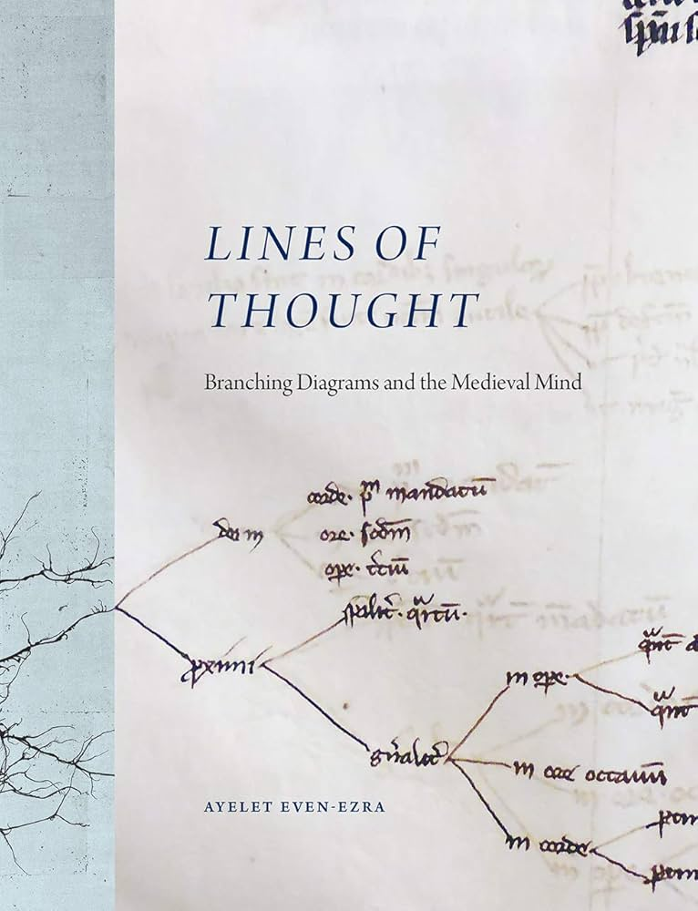
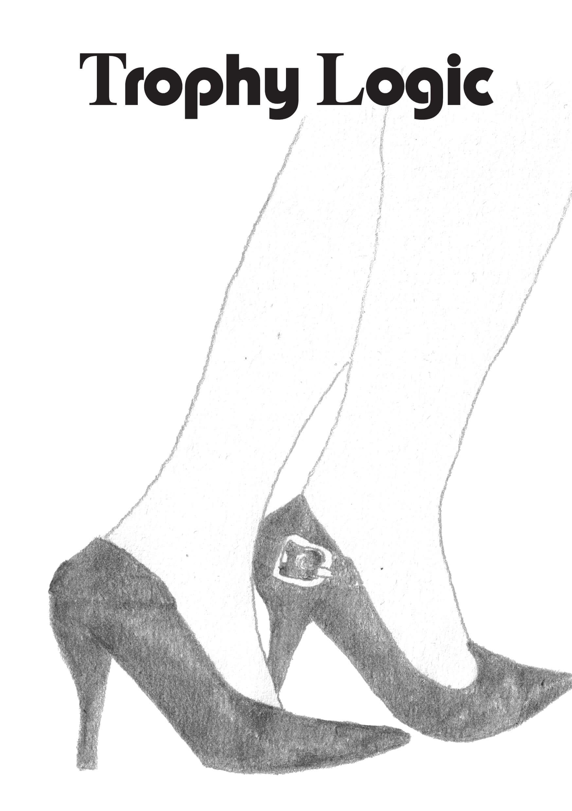
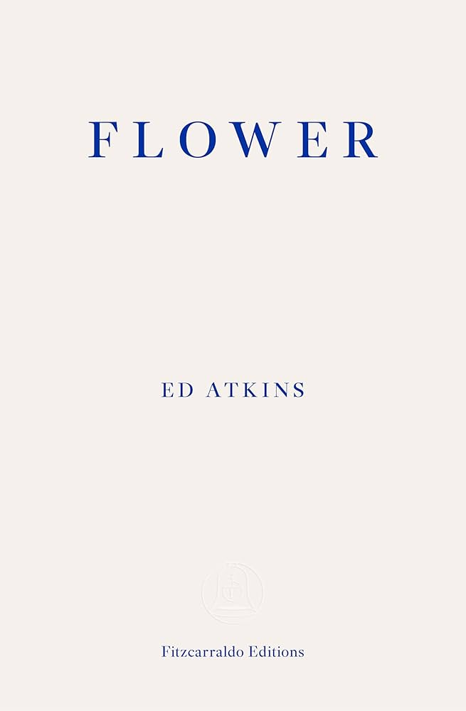
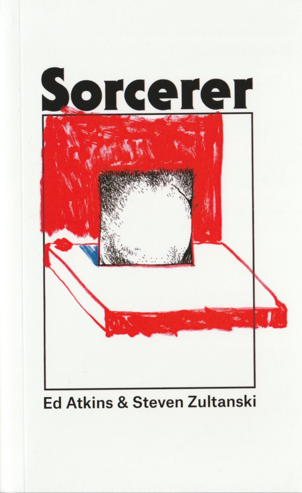
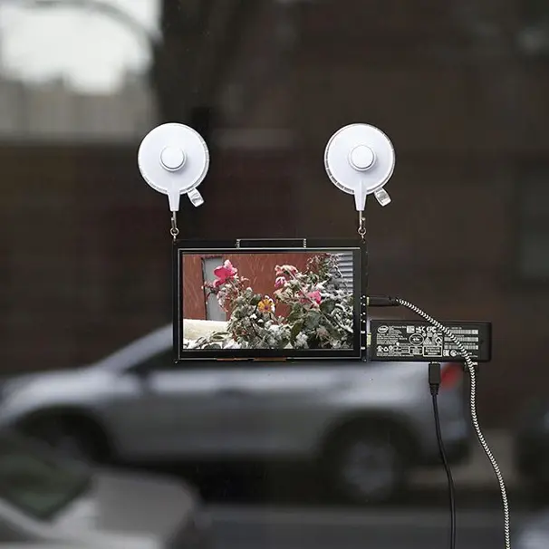

References:
Ayelet Even-Ezra, Lines of Thought: Branching Diagrams and the Medieval MindLines of Thought
Ed Atkins, Flower
Ed Atkins and Steven Zultanski, Sorcerer
Tim Ingold, Walking the Plank
Laurel Schwulst, My website is a shifting house next to a river of knowledge. What could yours be?
J.R. Carpenter, A Handmade Web
Midterm Make-up assignment    
Research class, Sandberg Critical Studies, Spring 2026.
Brief:
For April 9 the make-up assignment would be a written midterm in which you still present a proposal for a work for the final exhibition. In the proposal you discuss the research methodology that you used to develop your research question and work. This would have to be between 1500 and 2000 words. I would like for you to also include images or sketches of what you propose to make or inspiration for the work. The deadline for this would be May 20.
Answer:
I want to expand on my essay on oversaturation → I want to make a book → no I just want to make something handmade → What is something that is handmade and how can it be in accordance with the essay? → Is a book actually an appropriate medium, since oversaturation is something that expands? → Maybe I'll just make a handmade website.
First, I wanted to make a performative lecture, an excercise in non-linearity – then I nearly quit the school from having too many things going on and the lecture loomed large, becoming too big or too much of a black hole. It didn't really seem possible.
While deciding if I would stay the semester, I had a 1+1 with Femke – this was around mid-March. We talked about a lot but mainly on using this period as research; I was experiencing what I was trying to write about, and I couldn't possibly make it make sense in any meaningful way, other than keeping a diary and writing down what I thought when I felt overwhelmed. We also talked about non-linearity, and untangling the mess; she showed me this book Lines of Thought: Branching Diagrams and the Medieval Mind
I kept the diary, and I was also keeping a seperate diary for the other make-up assignment on my Venice project (another website incoming) – these diaries eventually morphed into one another and became the text Mediumsized, to be published in Trophy Logic
Mediumsized is a short text, majorly inspired by Ed Atkins' book Flower
I thought of how I keep returning to certain stories, themes and references; my writing feels often cyclical or self-referential, and I re-use parts to remake what I'm trying to say, to realise it fully. Accretion, slice, glimmer. So in a way, it is like a collage – which is also how I usually work in my graphic design practice.
And here my idea had started forming. In a previous version of this text I wrote:
What is clear is that it needs to be handmade, it HAS to be handmade, for I will go insane if it is computer-based. If I could deep-clean my bathroom and call it a handmade performance, I would just do that. Sometimes that feels exactly like creating something.
After waking up at 4:00 to take a flight from Treviso to Eindhoven, I had gotten home around noon and immediately started vacuuming, with each cleaning task intensifying exponentially, until I actually was deep-cleaning the tiny bathroom, which I had wanted to do for a long time. This reminded me of a conversation I'd had with Iris over wine in our house, where we talked about what we would be doing if we were not art-adjacent freelancers. We both said we were not artists, or did not feel like artists and would therefore probably expend our energies in various house-related projects; making furniture, building walls, knitting, sewing. I told her how I had always identified as a handy-man although I technically was not one. I have talked at length with the professors in my previous MA on the importance of the hand in making any material, the visible and invisible craft that goes into knowingly knowing, making everything from scratch (this is why I can't make a brand guide to save my life). Intentional crafting?
However – I thought of how it would be to make a publication, imagining myself taking all the steps needed; I would need to re-write the text first, and design and print and bind, which is something I have done many times before, but now I have just about two weeks to realise it and my already deadtired mind could not wrap my stony head around finding any of the aforementioned steps motivating. The physicality of making a book; this reminded me of Tim Ingold's text Walking the Plank – Meditations on a Process of Skill, tracing the procedural process of building a bookcase, or sawing a plank, likening it to taking a walk, where every step builds on the one taken before. I did not like the look of the book process and I started imagining the book as a website instead.
Here is a link to the first iteration of the essay book website.
I thought the concept of the hypertext would lend itself to the type of essays that I like to write; massively referential and more like a collage of things than a linear structure. The surfer could choose to reveal or hide each layer of material as they please – or they could search for every single thing linked.
I have read My website is a shifting house next to a river of knowledge. What could yours be? by Laurel Schwulst many times, and shown it to students that I was teaching (how to make websites) – the essay is now webdesign canon, but it also touched on this important idea that I have been mulling around for years; that writing code and making your own corner (or shell) on the WWW is like making a bookwork or knitting a scarf or tending to a garden, although it does not have to be described in only homely terms. I've been following the HTML energy wherever it goes – and the single longest-running project I have is my own website that I have been hardcoding since 2015. For nearly as long as I have known how to write, I have been writing HTML and CSS. I love HTML and CSS (I don't love any other script, this is my main achilles heel).
But back to the handmade element; in the short essay A Handmade Web, J. R. Carpenter writes:
I evoke the term 'handmade web' to refer to web pages coded by hand rather than by software; web pages made and maintained by individuals rather than by businesses or corporations; web pages which are provisional, temporary, or one-of-a-kind; web pages which challenge conventions of reading, writing, design, ownership, privacy, security, or identity.
My goal for the essay website is to eventually upload everything I write, making it into a web of hypertext and crossreferential essays that can also present as standalone pieces. How does it affect the reading when the layers are visible?
I hope the site can be something that develops over time, becoming a platform for my writing that exists outside of books or substack or any other social media.
In terms of design and functionality decisions, the site is now a single HTML document. The text appears one paragraph at a time, from left to right. At the top are the footnotes, and at the bottom are the footnotes' footnotes – on the left, a panel appears with additional readings when the right word is clicked. On the right, a panel accumulates images. At the bottom, a panel collects information on everything clicked and when the page is refreshed all accretion disappears. When surfing hyperlinks, the accumulated history is important – like leaving a trail of breadcrumbs, each click is procedural; a mirage or an index of surfbehaviour appears.
Questions:
To-do list

I have been thinking about black holes a lot – the idea that the presence of a large entity changes the probability of actions and events. A metaphorical gravity? This could be connecting to my thoughts on oversaturation and the sublime – the sublime being a feeling so amazingly large it is impossible to describe in any meaningful way, and with oversaturation representing the flip side of largeness, but without pleasure. Next to a black hole nothing happens and next to oversaturation nothing stands out.
In the spirit of the handmade web, the contents of this website is entirely written and edited in the Visual Studio Code text editor, and made while simultaneously making the code work. I used Claude Code to help me implement javascript - like the wordcounter and scrolling color. The site is hosted on Github Pages under my domain.